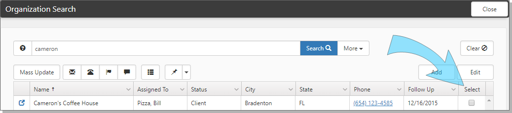

Sometimes you need to update several Organization records with the same change, but you shouldn't have to open each one, make the change and save. You don't have to – the Organization Search dashboard provides a Mass Update function that allows you to select multiple records and update them all at the same time.
To use Mass Update from the Organization Search:
Open the Organization Search dashboard and use filtering to find the records you want to change.
Select the records using the Select option at the end of the row.

Click Mass Update.
The Mass Update form opens.
Choose the Organization Detail fields you want to update, make your changes, and click Save.
Security changes from Mass Update fire Org business logic and thereby update any related Client Team and Workspace Owner settings on the related workspace.